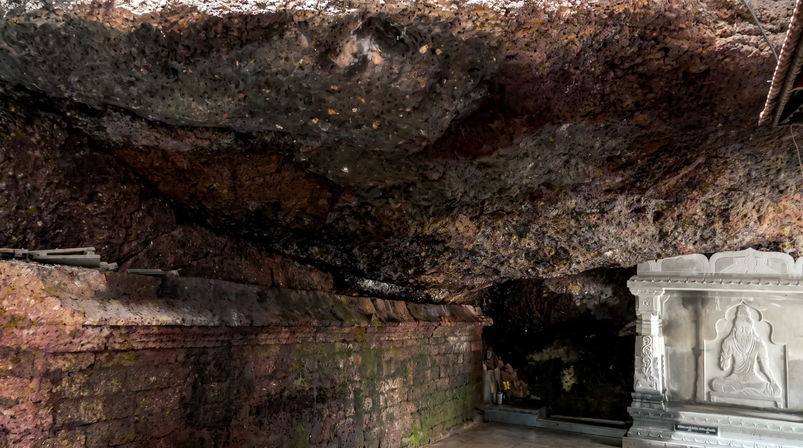

THE CAVE TEMPLE
The cave
The cave is open only between October and April.

Inside the cave
The main attraction of the temple is the cave. Situated right at the entrance of the temple towards the left of the main door, this huge cave is one of nature’s wonders. Unspoilt by human indulgence, the cave is a nature lover’s delight. A visit to the inside of the cave is considered a sacred and spiritual experience by devotees. The entrance to the cave is huge and wide. Within a few feet, the trail narrows down and one is forced to bend and crawl forward. Subsequently, one has to fall flat on the tummy and crawl ahead. Finally, after about 300 to 400 metres, the cave widens again and we find a huge lake in there. There is a natural Shiva Lingam in front of the lake and devotees pray and worship the lingam.
The most amazing part of the cave is the fine quality of the mud available inside. It is said that the mud here has healing powers and is treated as prasadam by devotees. Right behind the Shiva Lingam, a second cave starts off. Not many people have ventured into this second cave till date. A few who have gone ahead vouch for the extreme terrain they have encountered. It surely will be challenging for the adventure lovers.
The name
The name Nellitheertha also has its etymological roots in the cave. Inside of the cave, drops of water, in the shape of amla (gooseberries) constantly keep dripping down. In fact, the lake is made up of these drops of water. Hence the name Nelli (Amla) Theertha (holy water).
October to April
Another unique aspect of the cave is that it is closed for nearly 6 months a year. The cave is open only between October and April. Though there are religious reasons associated with this (it is said that the cave is open 6 months a year for humans and is meant for Gods and Rishis the remaining 6 months), the point is that the 6 month break each year helps the cave to “rejuvenate”. The water freshens up and the animals inside enjoy the lack of disturbance. Yes, there are plenty of animals inside the cave. Most common among them are snakes (of all varieties), scorpions, porcupines and thousands of bats. These are considered sacred and troubling or hurting the animals in any manner is strictly forbidden.
Maharshi Jabali
Legend also has it that Maharshi (Saint) Jabali used this cave as his abode. It is believed that Maharshi Jabali performed Tapas (penance) here to Lord Durgaparameshwari to request her to kill Arunasura (a demon). It is said that Sri Durga acceded to Jabali’s request and destroyed Arunasura at Kateel (another fabulous and famous temple town, very close to Nellitheertha). There is a spot inside the cave which is widely believed to be where Maharshi Jabali performed his Tapas.
All devotees who want to enter the cave have to bathe in Nagappa Kere first. Photographs of the temple are in the gallery.